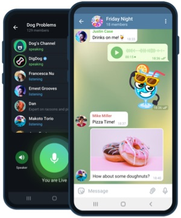

您可以在此处为您的 Android 设备下载 Telegraph纸飞机。 此版本限制较少，可直接从 官网 接收自动更新
下载 Telegraph
或者扫码下载 安卓Android 最新版
该视频展示了如何在您的 安卓Android 设备上安装 Telegraph。 有关各种 Android 版本的详细步骤，请参阅此页面。
从 Google Play 商店安装应用程序更舒服？ 从 Google Play 下载telegrph